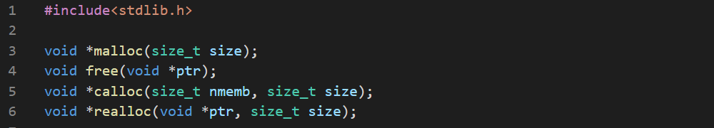

The memory space the operating system is able to use may be larger than the physical memory present in your computer. This is made possible by the virtual memory of the OS. This memory is divided into two parts:
- The kernel space - this is where the OS kernel resides. This part includes the kernel's code, file buffers, caches, control blocks etc. This part is unavailable to the processes. They can only invoke the services it provides.
- The user space - This is where processes work. The OS is capable of manipulating the processes memories, but not vice varsa. The processes can't involve in other process's memory.
The user space is divided among all the processes. This is very dynamic as processes are created, and destroyed all the time and they sometimes require more space from OS. The virtual memory consists of pages, and OS manages the pages without disturbing the whole system.
The process's space is divided into four parts:
- Text- name and executable code.
- Data - nonautomatic (static) data.
- Stack - permanently growing and shrinking part storing automatic data.
- Heap - dynamic data.
The stack grows toward the heap and the heap grows toward the stack. The programmer can only manage the heap.
There are functions to manage the heap memory pool. The mechanism differs from compiler to compiler. The allocator is a very sophisticated software but some "c" implementations allow to replace the built-in allocator with their own algorithms i.e. hooks in gcc (hook is a pointer to a function which is automatically invoked every time an event occurs. The gcc also have a function named mallopt() to configure the built-in allocator.

The size_t is an unsigned int long enough to specify the maximal size of an entity, The malloc() function returns a void pointer is successful and NULL pointer otherwise. The allocated memory may have garbage value.
Now we'll write a program to allocate smallest memory block possible and check the alignment.


The result differs significantly in other compilers.
The free() function deallocates previously allocated memory. Same block of memory shouldn't be freed more than once. This function returns nothing. Any memory not freed will be automatically relesased when your program exits. But not freeing up memory in big and complex programs may result in memory leak which is very difficult to find.
The calloc() function is a better version ofmalloc(). We have to provide number of memory blocks and the size of each block. The whole memory block is filled with zeros.


This shows the difference between these two functions.
The realloc() function changes the size of the previously allocated pointer. If the new size is bigger, the newly allocated memory is not initialized. If the size is zero, it acts like free(). The function returns NULL on error and the old memory block remains untouched.
Let's examine the behaviour of realloc().


This shows the fact that the newly allocated memory have garbage value and the old memories have the same value as before.
There are several functions that allocate memory silently, and has to be freed explicitly. One of these function is strdup()which duplicates a string. It allocates the length of the source string plus one and copies the original string to the newly allocated block and returns a pointer to it.
The following program shows how it works.


This shows that both the string is the same but the region is not the same.
Other fucntions of this kind are asprintf() and vasprintf() which is same as sprintf() and vsprintf() but this allocates the memory themselves. These functions are not standard functions set.

We should implement these functions ourselves. But we have to know two more funtions before that.

This does the same thing as the 2 functions above but writes size number of bytes only. If we provide NULL and zero for the first two arguments, the function returns the size of the memory required for format without allocating memory.